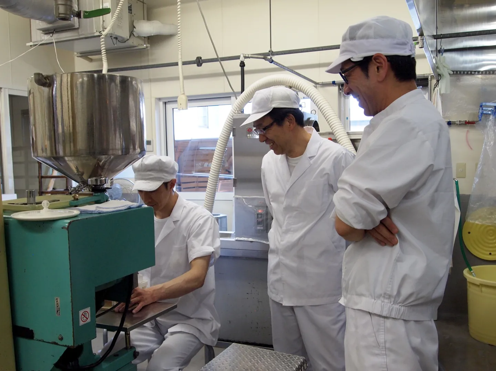
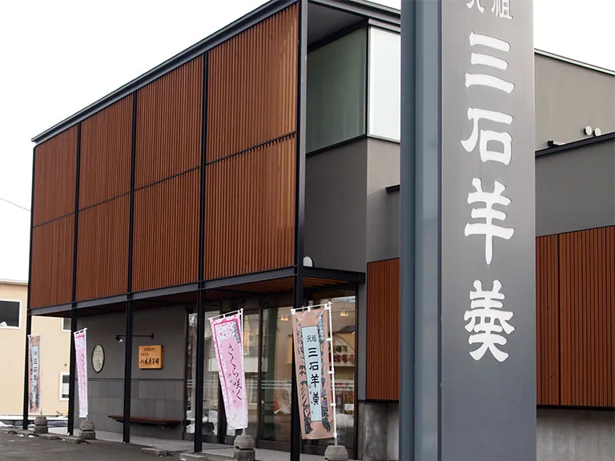

ABOUT THE SHOP
このお店のこと。
現サイトでは、創業以来受け継がれてきた餡の技と、職人の羊羹づくりへのこだわりを紹介しています。三石のお菓子を知るなら、まず名前を覚えておきたい一軒です。
出会える味、もの、サービス。
元祖三石羊羹
お店の看板として紹介されている和菓子。
三石のお土産に
サイズ・包装・現在の品揃えは、店舗へ問い合わせてから訪れると安心です。
PHOTO JOURNAL
写真でのぞく、お店の魅力。


写真は現サイトの店舗紹介から保存したものです。撮影当時の内容で、現在の外観・商品・提供状況とは異なる場合があります。写真を押すと大きく表示します。